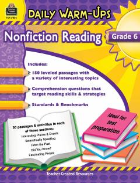

DW6-sinf o'quvchilari uchun mo'ljallangan qisqa ilmiy-ommabop o'qish mashqlari to'plami.
Ushbu kitob 6-sinf o'quvchilari uchun mo'ljallangan qisqa va qiziqarli ilmiy-ommabop matnlardan iborat to'plamdir. Har bir matn o'quvchilarning o'qish tezligi va tushunish qobiliyatini rivojlantirishga qaratilgan mashqlar bilan birga taqdim etilgan.